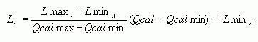

Конвертация данных Landsat TM/ETM+ в значения температуры - Теория
Техническое описание процесса пересчета данных 6 канала Landsat 4,5,7) в температуру
Для конвертации данных TM используется канал номер 6, для конвертации данных ETM+ используются каналы 61 и 62.
Конвертация данных полученных со спутников Landsat 4, 5 и 7 в значения температур земной поверхности осуществляется в два этапа:
Этап 1 Пересчет значения DN в значения излучения приходящего на сенсор
Пересчет осуществляется по формуле:

Подробнее о конвертации данных TM, ETM+ в показатели излучения на сенсоре см. здесь. Подробнее о том, какие значения могут принимать параметры Qcalmax, Qcalmin см. практическую часть.
Таблица 1. Параметры пересчета данных 6-ого канала в излучение, приходящее на сенсор (at-sensor radiance) [watts/(meter squared * ster * μm)] для сенсора ETM+
Low Gain |
High Gain |
||
LMINλ |
LMAXλ |
LMINλ |
LMAXλ |
0.0 |
17.04 |
3.2 |
12.65 |
Обратите внимание, что в отличие от других каналов значения LMINλ и LMAXλ 6-ого канала остаются неизменными для снимков полученных после 1 Июля 2000.
Таблица 2. Параметры пересчета данных 6-ого канала в излучение, приходящее на сенсор (at-sensor radiance) [watts/(meter squared * ster * μm)] для сенсора TM, различий в Low Gain и High Gain нет, 6 канал только один.
LMINλ |
LMAXλ |
1.2378 |
15.303 |
Обратите внимание, что в отличие от других каналов значения LMIN и LMAX 6-ого канала остаются неизменными для снимков полученных после 5 мая 2003.
Для данных TM (Landsat 4, 5) QCALMIN = 0 и формула пересчета соответственно:

Этап 2 Пересчет значений излучения на сенсоре в значения температуры
Пересчет осуществляется по формуле:
T = К2/ ln((К1/Lλ) +1)
где,
T - абсолютная температура в Кельвинах
K1 - калибровочная константа 1
K2 - калибровочная константа 2
Lλ - излучение на сенсоре, полученное на этапе 1 [watts/(meter squared * ster * m)]
Константы 1 и 2 получаются из следующей таблицы:
Камера/Единицы измерения |
[watts/(meter squared * ster * m)] |
Кельвин |
Константа |
1 |
2 |
TM 4 |
671.62 |
1284.30 |
TM 5 |
607.76 |
1260.56 |
ETM + |
666.09 |
1282.71 |
(Источники: ETM+ - Landsat Science Data Users Handbook, TM - Revised Landsat-5 TM Radiometric Calibration
Procedures and Postcalibration Dynamic Ranges)
Важные замечания, о которых нужно помнить:
- Данные будут конвертированы в значения абсолютных температур, выраженных в градусах Кельвина
- Чувствительность данных (разница температур, которая может быть зафиксирована)
0,5 К - для low gain режима
0,48 K - для high gain режима - Для данных полученных с сенсора ETM+ до 20 декабря 2000 (LPGS) (до 30 октября 2000 для IAS и до 1 октября 2000 для NLAPS) существует погрешность, связанная с неправильной калибровкой 6 канала, поэтому все значения примерно на 3 градуса Кельвина выше реальных. Для того, чтобы компенсировать эту погрешность, необходимо вычесть из полученного на 1 этапе значения излучения, приходящего на сенсор, величину равную 0.31 [watts/(meter squared * ster * μm)]. Это условие обязательно для данных уровня обработки Level 1R и Level 1G.
Ссылки по теме
Дата создания: 16.02.2005
Автор(ы): Анна Костикова